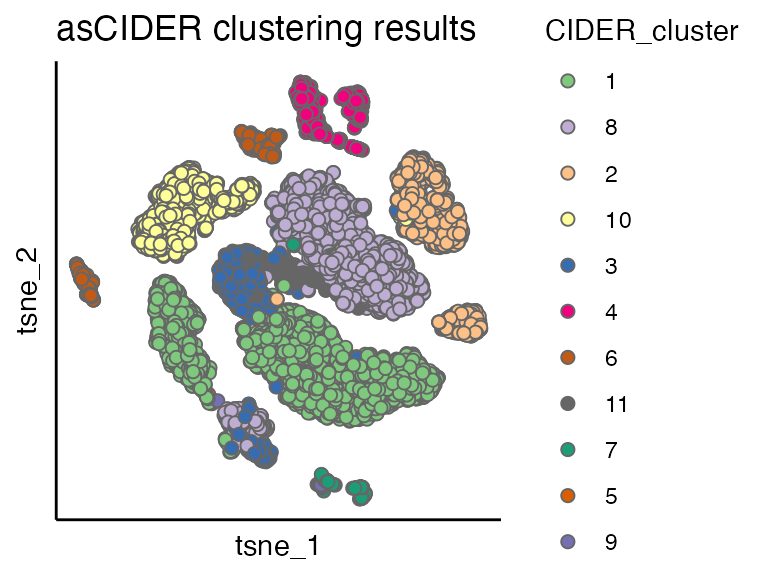
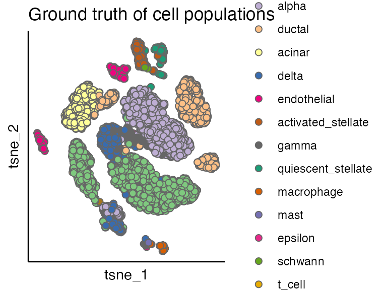

vignettes/dnCIDER_highlevel.Rmd
dnCIDER_highlevel.RmdThe example data can be downloaded from https://figshare.com/s/d5474749ca8c711cc205.
Pancreatic cell data\(^1\) contain cells from human (8241 cells) and mouse (1886 cells).
load("../data/pancreas_counts.RData") # count matrix
load("../data/pancreas_meta.RData") # meta data/cell information
seu <- CreateSeuratObject(counts = pancreas_counts, meta.data = pancreas_meta)
table(seu$Batch)
#>
#> human mouse
#> 8241 1886DnCIDER contains three steps
seu <- initialClustering(seu, additional.vars.to.regress = "Sample", dims = 1:15)
#>
|
| | 0%
|
|=================================== | 50%
|
|======================================================================| 100%
ider <- getIDEr(seu, downsampling.size = 35, use.parallel = FALSE, verbose = FALSE)
seu <- finalClustering(seu, ider, cutree.h = 0.35) # final clusteringWe use the Seurat pipeline to perform normalisation (NormalizeData), preprocessing (FindVariableFeatures and ScaleData) and dimension reduction (RunPCA and RunTSNE).
seu <- NormalizeData(seu, verbose = FALSE)
seu <- FindVariableFeatures(seu, selection.method = "vst", nfeatures = 2000, verbose = FALSE)
seu <- ScaleData(seu, verbose = FALSE)
seu <- RunPCA(seu, npcs = 20, verbose = FALSE)
seu <- RunTSNE(seu, reduction = "pca", dims = 1:12)We can see
scatterPlot(seu, "tsne", colour.by = "CIDER_cluster", title = "asCIDER clustering results") 
By comparing the dnCIDER results to the cell annotation from the publication\(^1\), we observe that dnCIDER correctly identify the majority of populations across two species.
scatterPlot(seu, "tsne", colour.by = "Group", title = "Ground truth of cell populations") 
sessionInfo()
#> R version 4.1.2 (2021-11-01)
#> Platform: x86_64-apple-darwin17.0 (64-bit)
#> Running under: macOS Big Sur 10.16
#>
#> Matrix products: default
#> BLAS: /Library/Frameworks/R.framework/Versions/4.1/Resources/lib/libRblas.0.dylib
#> LAPACK: /Library/Frameworks/R.framework/Versions/4.1/Resources/lib/libRlapack.dylib
#>
#> locale:
#> [1] en_US.UTF-8/en_US.UTF-8/en_US.UTF-8/C/en_US.UTF-8/en_US.UTF-8
#>
#> attached base packages:
#> [1] parallel stats graphics grDevices utils datasets methods
#> [8] base
#>
#> other attached packages:
#> [1] cowplot_1.1.1 SeuratObject_4.0.4 Seurat_4.1.0 CIDER_0.99.0
#>
#> loaded via a namespace (and not attached):
#> [1] systemfonts_1.0.2 plyr_1.8.6 igraph_1.2.8
#> [4] lazyeval_0.2.2 splines_4.1.2 listenv_0.8.0
#> [7] scattermore_0.7 ggplot2_3.3.5 digest_0.6.28
#> [10] foreach_1.5.1 htmltools_0.5.2 viridis_0.6.2
#> [13] fansi_0.5.0 magrittr_2.0.1 memoise_2.0.0
#> [16] tensor_1.5 cluster_2.1.2 doParallel_1.0.16
#> [19] ROCR_1.0-11 limma_3.50.0 globals_0.14.0
#> [22] matrixStats_0.61.0 pkgdown_2.0.6 spatstat.sparse_2.0-0
#> [25] colorspace_2.0-2 ggrepel_0.9.1 textshaping_0.3.6
#> [28] xfun_0.28 dplyr_1.0.7 crayon_1.4.2
#> [31] jsonlite_1.7.2 spatstat.data_2.1-0 survival_3.2-13
#> [34] zoo_1.8-9 iterators_1.0.13 glue_1.5.0
#> [37] polyclip_1.10-0 gtable_0.3.0 leiden_0.3.9
#> [40] kernlab_0.9-29 future.apply_1.8.1 abind_1.4-5
#> [43] scales_1.1.1 pheatmap_1.0.12 DBI_1.1.1
#> [46] edgeR_3.36.0 miniUI_0.1.1.1 Rcpp_1.0.7
#> [49] viridisLite_0.4.0 xtable_1.8-4 reticulate_1.22
#> [52] spatstat.core_2.3-1 htmlwidgets_1.5.4 httr_1.4.2
#> [55] RColorBrewer_1.1-2 ellipsis_0.3.2 ica_1.0-2
#> [58] farver_2.1.0 pkgconfig_2.0.3 sass_0.4.0
#> [61] uwot_0.1.10 deldir_1.0-6 locfit_1.5-9.4
#> [64] utf8_1.2.2 labeling_0.4.2 tidyselect_1.1.1
#> [67] rlang_1.0.5 reshape2_1.4.4 later_1.3.0
#> [70] munsell_0.5.0 tools_4.1.2 cachem_1.0.6
#> [73] cli_3.1.0 dbscan_1.1-8 generics_0.1.1
#> [76] ggridges_0.5.3 evaluate_0.14 stringr_1.4.0
#> [79] fastmap_1.1.0 yaml_2.2.1 ragg_1.1.3
#> [82] goftest_1.2-3 knitr_1.36 fs_1.5.0
#> [85] fitdistrplus_1.1-6 purrr_0.3.4 RANN_2.6.1
#> [88] pbapply_1.5-0 future_1.23.0 nlme_3.1-153
#> [91] mime_0.12 compiler_4.1.2 rstudioapi_0.13
#> [94] plotly_4.10.0 png_0.1-7 spatstat.utils_2.2-0
#> [97] tibble_3.1.6 bslib_0.3.1 stringi_1.7.5
#> [100] highr_0.9 desc_1.4.0 lattice_0.20-45
#> [103] Matrix_1.3-4 vctrs_0.3.8 pillar_1.6.4
#> [106] lifecycle_1.0.1 spatstat.geom_2.3-0 lmtest_0.9-39
#> [109] jquerylib_0.1.4 RcppAnnoy_0.0.19 data.table_1.14.2
#> [112] irlba_2.3.3 httpuv_1.6.3 patchwork_1.1.1
#> [115] R6_2.5.1 promises_1.2.0.1 KernSmooth_2.23-20
#> [118] gridExtra_2.3 parallelly_1.28.1 codetools_0.2-18
#> [121] MASS_7.3-54 assertthat_0.2.1 rprojroot_2.0.2
#> [124] sctransform_0.3.3 mgcv_1.8-38 grid_4.1.2
#> [127] rpart_4.1-15 tidyr_1.1.4 rmarkdown_2.11
#> [130] Rtsne_0.15 shiny_1.7.1